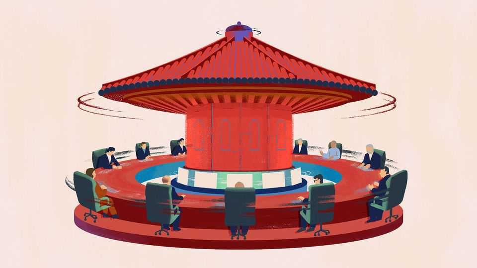

Xi Jinping’s plan for a China-centric world order
A “community with a shared future” sounds soft, but is backed by muscle

Nov 12th 2026
When Donald Trump, Vladimir Putin and nearly 20 other national leaders gather in Shenzhen next week, they will be treated by Xi Jinping to displays of China’s marvels. Drones will swarm and sparkle overhead, fleets of humanoids will usher delegates through conference halls and ultrafast-charging electric vehicles will shuttle them between venues. The message to the annual summit of the Asia-Pacific Economic Co-operation forum—that China’s technology is cutting-edge—will be clear to all.
But there will also be a subtler message, signalling Mr Xi’s idea of how the world should look. The summit’s theme, “building an Asia-Pacific community to prosper together”, is a deliberate echo of his main foreign-policy doctrine: “building a community with a shared future for mankind”. Ma Zhaoxu, a vice-foreign minister, has made the link explicit, tracing the theme back to Mr Xi’s calls since 2013 for an “Asia-Pacific community with a shared future”.
To many observers, this language may seem obscure. It is certainly a mouthful. Even China hawks face a challenge in explaining to the public why a “shared future” is threatening (the literal translation, “common destiny”, has a more chilling, deterministic edge, which is presumably why a switch was made to softer wording in English). Yet this is not just a casual slogan. It has been written into China’s constitution and tied to every big diplomatic initiative that Mr Xi has launched for more than a decade. So it is worth asking what, exactly, he means by it.
A natural place to start is the Chinese government’s white paper, published in 2023, that tried to explain Mr Xi’s doctrine. Running to nearly 13,000 words, it might seem to cover a lot of ground. Alas, the content is overwhelmingly vague. Among its exhortations: countries ought to “work together in harmony and unity” and should “strengthen dialogue” while promoting “peace and development”. Hard as it is to disagree, it comes across more like a general wish list than a specific, operable plan. Chaguan found only four forward-looking commitments. China will not seek hegemony, China will cut carbon emissions, China will modernise its economy, China will work with other countries. All are restatements of existing policy and, again, not much to go on.
Chinese scholars have tried to put meat on the bones. Yang Jiemian of the Shanghai Institute for International Studies made a notable attempt this year when he declared that the doctrine deserves to be seen as a full scientific system. It offers specific goals (eg, lasting peace), has a road map defined by Mr Xi’s four global initiatives (on development, security, civilisation and governance), and is delivered concretely via Mr Xi’s Belt and Road Initiative for global infrastructure-building.
The trouble with such elaborations is that they peel back abstraction to reveal yet more abstraction. In the parlance of our times, it is turtles all the way down. What is Mr Xi’s “shared future”? Why, it is the embodiment of his global initiatives. And what are those? They are vehicles for principles like sovereignty, multilateralism and dialogue—which, in turn, bring us back to the definition of “shared future”. At least belt-and-road projects are tangible, such as railways in South-East Asia and roads in Africa. But they do not amount to grand strategy; they are overseas investments, some productive, some not. You must feel a twinge of sympathy for diplomats in Beijing when they are asked by their home governments for concise notes on Mr Xi’s “shared future”.
A recent book by Steve Tsang and Olivia Cheung of, respectively, the School of Oriental and African Studies and King’s College London, cuts through the ambiguity. They argue that the shared-future talk is a formal expression of Mr Xi’s true aspiration: the creation of a Sino-centric world order. But they also see an essential truth in Mr Xi’s repeated assertions that China is not seeking hegemony: he does not want to be burdened by global policing. He just wants recognition of China’s pre-eminence and other countries to defer to it, even when China’s behaviour impinges on their interests. His ideal world is one where sovereign leaders can do as they please within their borders—a world safe for autocrats and free of high-minded Western pontificators about rights and wrongs in other lands.
Students of Chinese history may feel they have seen this “shared future” before. It sounds a lot like the professed principle of mutual non-intervention that has been the much-touted lodestar of China’s foreign policy since the 1950s. The usual criticisms apply to both concepts. China has a history of meddling, such as backing African rebel movements in the Mao era or grabbing disputed territory—look at recent encroachments on waters close to the Philippines and across the unsettled border with India. Chinese officials do little when their closest partners mess with others. They have, in effect, enabled Russia’s invasion of Ukraine.
What has changed since the 1950s is the context. China’s economic and military power is orders of magnitude greater. It can put real muscle behind its demand for non-interference in its own politics. That is worrying—especially if it ultimately gives China cover to do whatever it wants with Taiwan. But for now, governments and businesses around the world are more consumed by fallout from America’s war against Iran and from Mr Trump’s tariffs. The immediate uncertainty is not what Mr Xi might say in Shenzhen but how Mr Trump will behave as a gravely wounded president after the Democrats’ triumph in the midterms.
Set against that, talk of a shared future is less threatening precisely because it is not a bold new vision for the world. Rather, it is a rebranding of a long-standing strategy: deeply conservative, occasionally hypocritical and focused on China’s own betterment. Other countries may not love it. But they know it.■